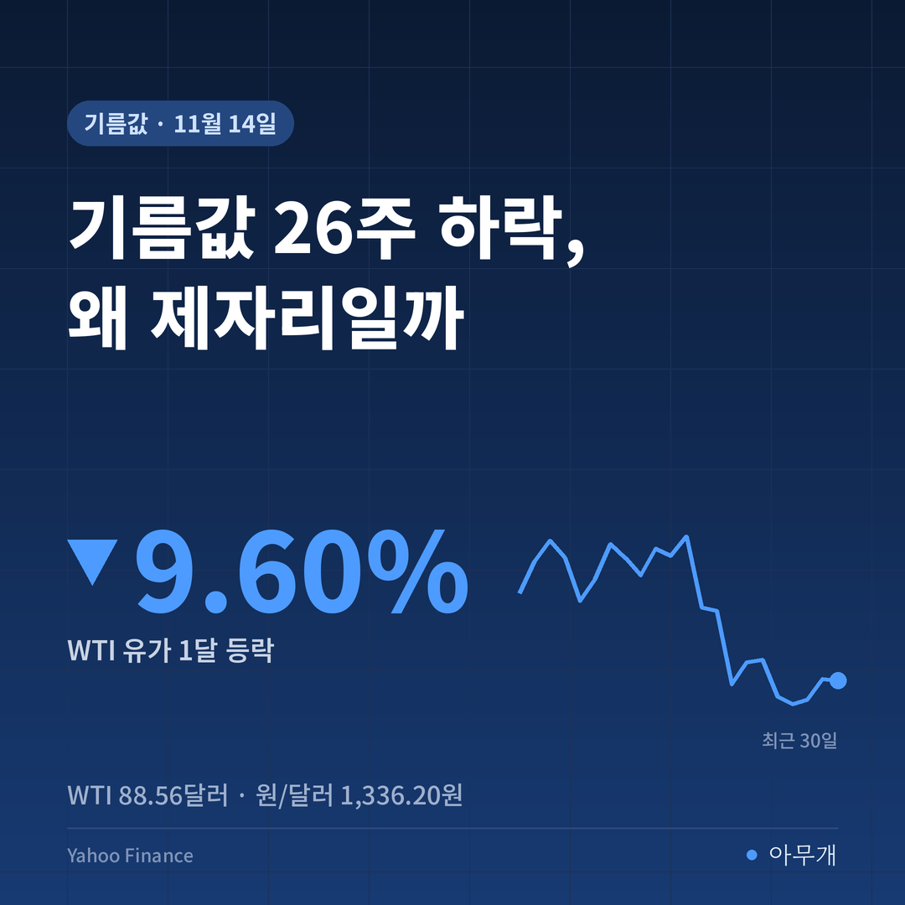
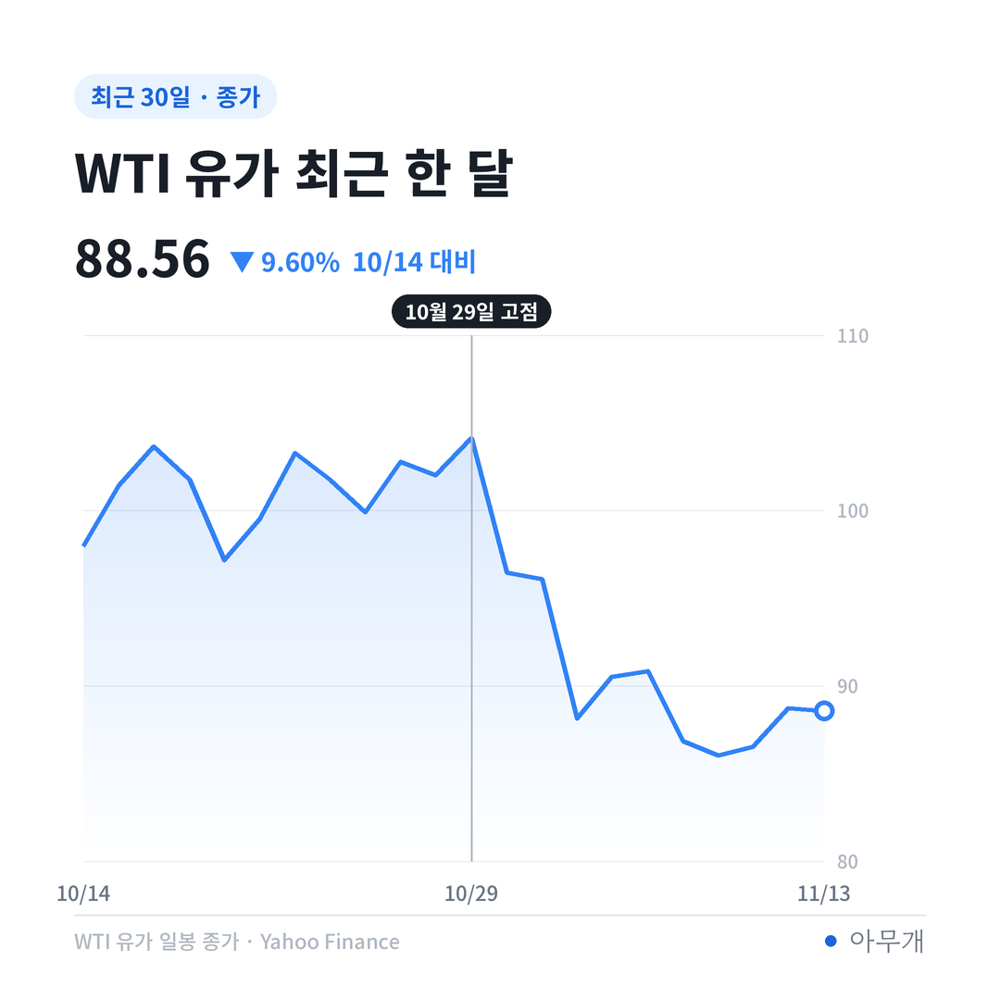
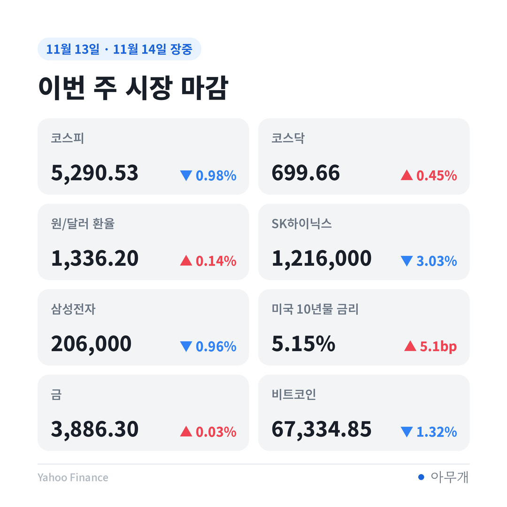
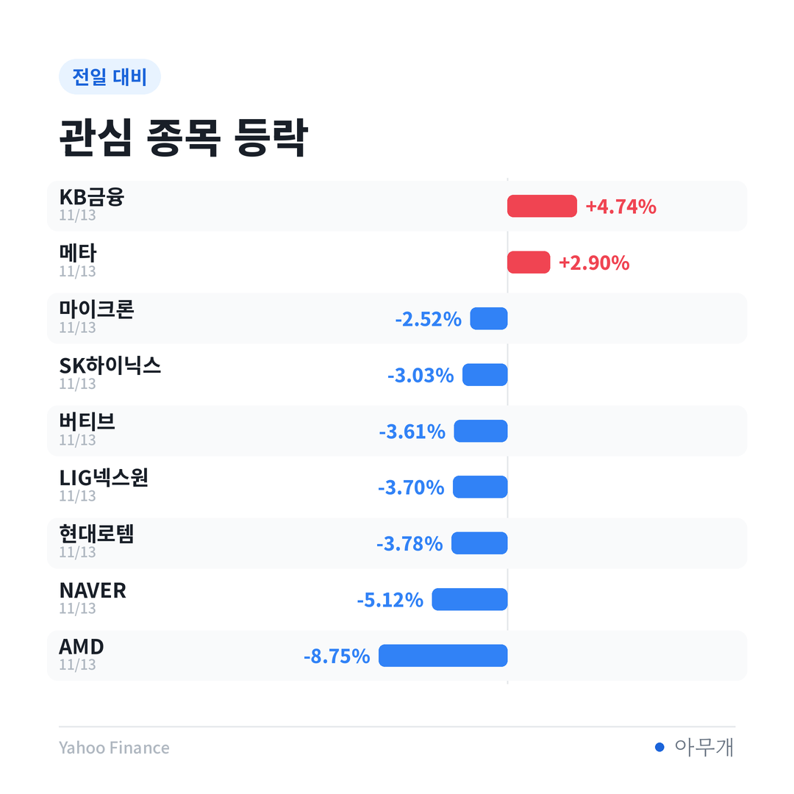

📷 사진 1 자리
26주 내렸는데 0.4원
주유소 기름값이 26주 연속 내렸다는 소식이 이번 주에도 나왔어요[2]. 숫자를 열어 보면 '내렸다'는 말이 조금 민망해요. 휘발유는 1,855.1원으로 전주보다 0.4원, 경유는 1,841.8원으로 0.2원 내렸어요[1].
이런 주가 벌써 두 달째예요. 휘발유는 9월 셋째 주부터, 경유는 8월 넷째 주부터 한 주 하락폭이 리터당 1원도 안 됐어요[1]. 26주 연속 하락이라는 기록과 체감이 엇갈리는 이유가 여기 있어요.
| 구분 | 11월 둘째 주 | 전주 대비 |
|---|---|---|
| 휘발유 전국 평균 | 1,855.1원 | -0.4원[1] |
| 경유 전국 평균 | 1,841.8원 | -0.2원[1] |
| 서울 휘발유 | 1,900.2원 | -0.1원[1] |
| 대구 휘발유(최저) | 1,826.9원 | +0.1원[1] |
배럴에서 리터로 바꿔 보면
국제 시장은 반대로 크게 움직였어요. 수입 원유 기준인 두바이유는 한 주에 배럴당 10.5달러 내린 89.0달러, 국제 휘발유는 8.6달러 내린 102.9달러, 국제 경유는 12.2달러 내린 151.1달러였어요[1].
📷 사진 2 자리
WTI는 13일 88.56달러로 한 달 새 -9.60%예요. 10월 29일 104.12달러와 비교하면 약 -14.94%예요. 미국이 이란에 추가 군사행동을 자제할 것이라는 관측에, 국제에너지기구(IEA)가 4분기 공급 과잉을 내다본 보고서까지 겹쳤어요[1][4].
📷 사진 3 자리
1배럴은 약 159리터예요. 국제 휘발유 하락폭 8.6달러를 리터로 나누고 원/달러 1,336.20원을 곱하면 리터당 약 72원이에요. 세금 같은 다른 비용이 그대로라고 단순하게 놓으면, 한 주에 72원어치 싸진 원료가 주유소에서는 0.4원으로 나타난 셈이에요[1].
물론 국제 가격은 보통 2~3주 늦게 주유소에 옮겨져요[1]. 이번 주 하락분이 아직 안 들어왔을 수는 있어요. 문제는 그 '시차'가 두 달째 이어진다는 점이에요.
정부가 그어 둔 선
정부는 3월 13일부터 석유 최고가격제를 시행해 왔어요[3]. 6월 27일부터 적용한 7차 가격(휘발유 1,784원, 경유 1,773원, 등유 1,380원)을 계속 유지했고[3], 13일 발표한 12차도 같은 값으로 묶었어요[1]. 7차부터 세면 다섯 번 연속 같은 가격이에요[3]. 12차는 14일부터 4주간 적용돼요[1].
이번 주 휘발유 평균 1,855.1원은 최고가격 1,784원보다 71.1원 높아요[1]. 경유도 1,841.8원으로 최고가격보다 68.8원 위예요[1]. 주유소 값이 상한보다 높다는 건, 이 상한이 주유소 판매가가 아니라 그 앞 단계 가격에 걸린 것으로 읽혀요. 그 선이 묶여 있는 한 주유소 값도 그 위 70원 안팎에 붙어 있게 되는 구조예요.
정부가 국제 가격이 내리는데도 선을 그대로 둔 이유는 공식 발언에 나와 있어요. 김정관 산업통상부 장관은 9일 국회에서 "중동 상황이 워낙 복잡하고 불확실하므로 지금 쉽게 중단할 수 없다"고 말했어요[3]. 국제유가가 전쟁 전보다 아직 18.9~26.7% 높다는 점도 함께 꼽혀요[3].
| 구분 | 내용 |
|---|---|
| ✅ 사실 | 12차 최고가격 동결(휘발유 1,784원·경유 1,773원·등유 1,380원), 14일부터 4주[1] |
| ✅ 사실 | 손실정산 예비비 4조2,000억원, 내년 예산안 예비비 1조4,497억원[3] |
| ✅ 사실 | 이달 말 첫 손실정산 통보(3월 13일~6월 30일분), 3분기분은 12월[3] |
| 🗣️ 업계 추산 | 정유업계, 6월까지 누적 손실 약 5조원 (정부 추산과 다름)[3] |
| 💭 해석 | 최고가격이 묶여 있어 국제 가격 하락이 주유소 값에 덜 옮겨진다는 읽기 (필자 해석) |
정산서가 열리는 11월 말
이 제도에는 계산서가 따라와요. 정부가 가격을 묶은 동안 정유사가 본 손실을 재정으로 메워 주는 구조라서예요[3]. 정부가 잡아 둔 예비비는 4조2,000억원인데, 업계는 6월까지 손실만 5조원이라고 봐요[3]. 둘 사이 차이는 약 0.8조원이에요.
기준도 아직 다투는 중이에요. 정부는 원가를 기준으로 하되 적정 마진을 고려할 수 있다고 했지만, 적정 마진이 얼마인지는 정해지지 않았어요[3]. 정유사는 통보를 받고 30일 안에 이의를 낼 수 있어요[3]. 업계에선 이 정산 규모가 최고가격제를 계속할지 정하는 변수가 될 거라고 봐요[3].
주유 한 번에 걸린 돈
50리터를 채우면 이번 주 평균가로 92,755원이에요[1]. 국제 휘발유 한 주 하락분 72원이 그대로 옮겨졌다면 한 번 주유에 약 3,600원이 덜 들었을 거예요. 반대로 최고가격 덕분에 올봄·여름에 덜 낸 돈도 있어요. KDI는 최고가격제가 3~10월 석유류 가격 상승률을 월평균 약 12%p, 소비자물가 상승률을 약 0.6%p 낮춘 것으로 추정했어요[5].
기름값은 소비 전체에도 걸려 있어요. KDI는 중동 전쟁에 따른 유가 상승이 올해 민간소비 증가율을 약 0.4%p 낮췄고, 내년엔 그 부담이 약 0.2%p로 줄 것으로 봤어요[6]. 기름값이 언제 내려오느냐가 내년 소비 회복 속도와도 이어지는 셈이에요.
투자 쪽 숫자는 이번 주 기름값과 따로 움직였어요. 13일 국장은 유가보다 반도체와 금리 영향이 컸고, SK하이닉스 -3.03%, NAVER -5.12%, KB금융 +4.74%로 닫았어요. 유가 하락에 직접 기대는 항공·정유주는 이 블로그 관심 종목 표에 없어 숫자는 따로 확인이 필요해요.
📷 사진 4 자리
최고가격이 풀리는 세 가지 길
| 시나리오 | 무엇을 보면 되나 | 예상되는 영향 |
|---|---|---|
| 다음 차수에 최고가격 인하 | 12월 13차 발표(12차 적용 4주 뒤), 국제 제품가 102.9달러 아래 유지[1] | 주유소 값이 그 인하폭만큼 2~3주 뒤 따라 내려올 수 있음 |
| 동결 유지 | 이달 말 손실정산 규모, 중동 협상 진척[3] | 주유소 값 1,850원대 제자리 지속, 국제 가격 하락분은 정산 부담을 줄이는 쪽으로 |
| 제도 종료 | 장관 발언 변화, 내년 예비비 1조4,497억원 집행 여부[3] | 국제 가격을 그대로 따라가 오르내림이 커짐, 국제유가가 다시 오르면 바로 반영 |
이번 주 숫자에서 가장 눈에 띈 건 72원과 0.4원의 차이였어요. 최고가격은 오를 때 막아 주는 장치로 소개됐지만, 선이 그대로 묶이면 내릴 때도 같은 선이 버팀목처럼 작동해요. 그래서 '26주 연속 하락'보다 '12월 13차 최고가격이 얼마로 나오느냐'가 내 주유비에 더 직접적인 숫자로 보여요.
✍️ 직접 보거나 들은 경험이 있으면 위 문단에 한두 줄 덧붙이세요 (이 안내 줄은 지우기)
반대로 보면, 국제유가는 이달 들어서만 크게 출렁였고 호르무즈 해협 긴장도 끝나지 않았어요[4]. 선을 서둘러 내렸다가 유가가 다시 뛰면 또 올려야 하니, 몇 주 지켜보는 동결이 오히려 가격을 덜 흔드는 선택이라는 시각도 충분히 가능해요. 쌓인 정유사 손실을 정산하는 동안에는 재정 부담을 줄일 이유도 있어요.
12월 둘째 주까지 달력에 적을 것
참고한 기사
이 글은 정보 제공 목적이며 투자 권유가 아닙니다. 투자 판단과 책임은 본인에게 있습니다.
수치 출처: 한국석유공사 오피넷(주유소 가격, 연합뉴스 인용), Yahoo Finance(WTI·환율·주가), 산업통상부(석유 최고가격, 연합뉴스·조선일보 인용)



